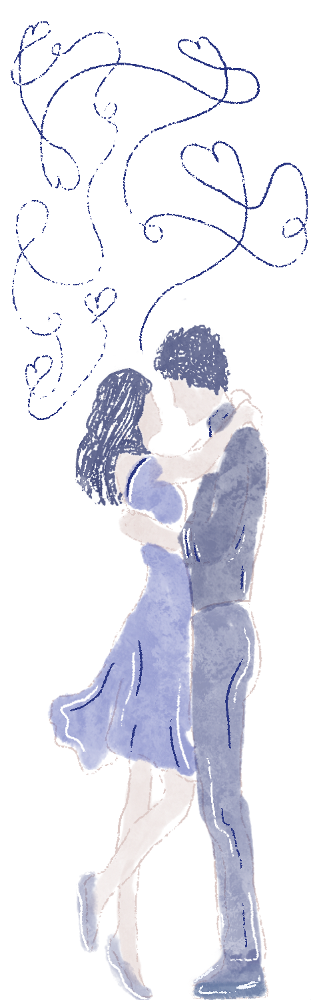

Moi, je vis avec toi. Donc je pense que j’en comprends plus que certains, mais peut-être 5 sur 100% et je me sens impuissant par moment. Généralement c’est des périodes de plusieurs jours avec une même personne au front, et où on va avoir quelque chose de constant dans la personnalité, avec des mélanges quelquefois mais rien de trop flagrant. Par moments, il va y avoir cinq switchs dans la journée, je vais voir huit personnes, et le comportement va changer à chaque fois. Je pense que j’en reconnais le plus, parce que c’est moi qui en ai rencontré le plus parmi tous les amis du corps. Mais j’en apprends encore tous les jours. Par exemple, pour les triggers c’est parfois complexe à gérer. Personnellement, je fais au maximum pour éviter les triggers que je connais, mais il y en a que je connais pas ou qui peuvent changer. Ça peut être un peu fatigant. Mais ça demande juste de la patience, en soi. Et puis il faut parler du fait qu'ils ont chacun leur personnalité et leur sentiment par rapport à moi. En soi sinon c'est comme chez tout le monde en fait, il y a des hauts et des bas, comme dans toute relation.
On t’a beaucoup dit que tu mentais, et c’est pas une question de mentir ou pas quand ça se voit, en fait. À force d’être auprès de toi, moi je l’ai vu, et l’accepter, c’est devenu quelque chose d’évident de t’aimer pour ce que tu es, ce que vous êtes.
Sinon pour une anecdote… J’étais dans le garage avec Faël, sauf que moi je ne sais pas à ce moment-là que c'est lui, je crois que c'est toi. Je commence à draguer, à vouloir t'embrasser etc. et… je sens un genre de malaise. Et là il finit par me dire « non mais c’est moi, gros t'es gênant ». Je pensais parler à ma chérie, en fait j’étais en train de draguer mon pote. On a bien ri ce jour-là
Quelquefois c’est moins “drôle”, c’est plus compliqué… Par exemple Charly c’est à la fois celui que je comprends le mieux, et à la fois celui que je comprends le moins. Lui il possède tous les souvenirs de tous les alters (bons comme traumatiques) et je ne sais pas comment ça doit être de vivre ça en étant un enfant. Mon "rôle" vis-à-vis de lui c’est toujours une question que je me pose. Je ne pense pas être son père, je ne pense pas être son frère. Je pense être comme son meilleur grand ami. Quand il est là, que ce soit pour manger, dormir, la douche etc. Je dois rester avec lui tout le temps. Et ça, c’est parfois compliqué à gérer, mais je garde un comportement patient parce que c’est un enfant, et que je sais qu’il a vécu des choses vraiment pas faciles et qu'il a besoin de moi. Voilà pour mes anecdotes, les plus flagrantes en tout cas, parce que j’en vis tellement…Enfin je dirais aux gens qui accompagnent une personne qui a le TDI : patience et compréhension. Ça demande un peu d’enquête et beaucoup d’attention et ça peut être épuisant quelquefois mais il y a des moments marrants, des incohérences drôles et vous pourrez en rire ensemble. Je sais qu’il y a des gens qui font beaucoup plus attention que moi, qui sont soigneux, machin, truc. Mais moi, je le vis vraiment naturellement. J’essaie d’être moi-même avec le plus d'alters possible. Je pense que ça aide beaucoup de discuter et de faire sentir l’être que tu aimes comme quelqu’un de légitime et pas de “bizarre” ou comme un poids parce que c’est pas le cas.
